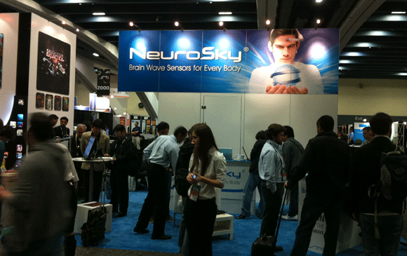
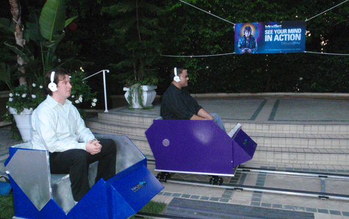
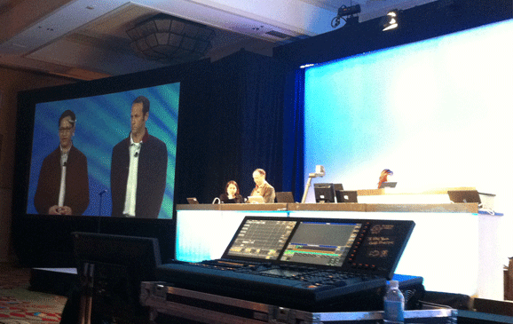
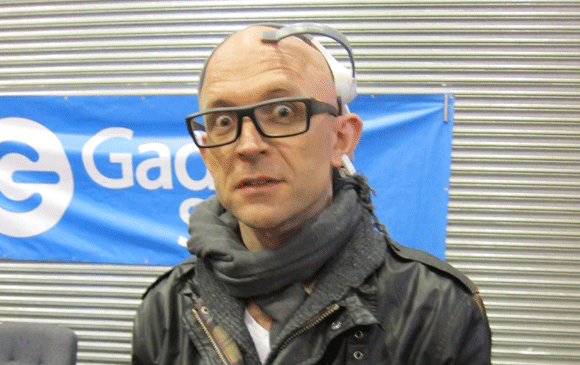
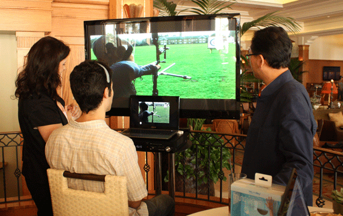
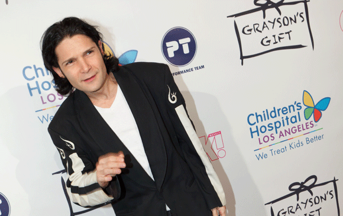
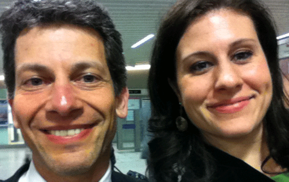
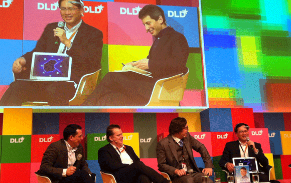
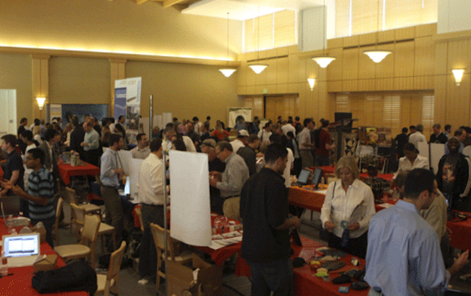

Brandspace
home
Tansy is among the top 1% most diligent, tireless, and competent people I've had the pleasure of working with.
Christie Nicholson, Science Journalist
Tansy is a quick learner, an independent thinker, and a self-starter ... sometimes we clashed, but it was always productive and focused on getting a great result. Sandor Schoichet, Director, Meridian Management Consultants
Tansy demonstrated the organizational and personal qualities necessary for creating a positive and rewarding team environment, on a fast-paced project.
Dan Tauber, Principal Investigator/Lead Communications Engineer, Lockheed-Martin
Tansy has a sharply strategic mind. - Sarah Robarts, President Ballenties PR.
When we had a difficult situation we knew that she was our "Go to" person to identify the problem and to find a fair solution. Neff Castro, Service Manager Honda RWC
Tansy is bright, articulate and thinks very well on her feet. Jim Sullivan, VP WW Sales, NeuroSky.
Her passion for technology is evident in the way she promotes her companies. She has brilliant business instincts and operates with integrity and effectiveness. Sarah Robarts, President, Ballentines PR
She is a wonderful boss, who gives direction and constructive criticism well.
Kathie Mar, Administrative and Marketing Assistant, Qvale Auto Group.
Game Developers Conference
2009 - 2011

MindSet Launch, Four Seasons
2009

DEMO
2011

The Gadget Show Live
2010, 2011 (Uk)

Casa Del Mar: MindGame Mondays
2011 (los Angeles)

Los Angeles Children's Hospital
Graysons' Gift Event

Wired UK

DLD
Germany 2011

Stanford Cool Product Expo
SF Bay Area - 2009 - 2011
